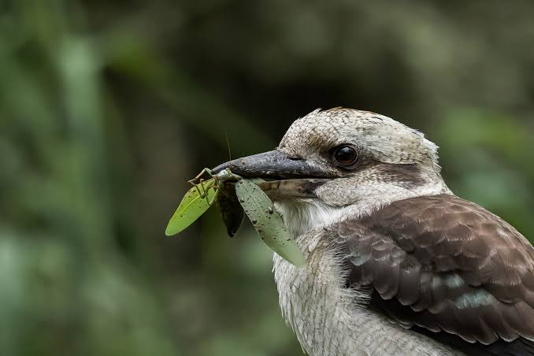

This is specific species of Kingfish or Kookaburra called the laughing Kookaburra due to its calls sounding like a person laughing.
They are only carnivores that are 15 to 16.5 inches they eat any type of animal such as but not limited to bugs, small birds, and small amphibians. They will eat small animals whole while for larger ones will bash them against rocks or branches to break bones tenderize the meat and swallowing them whole.
They often do their call at dusk and dawn to signal to other and their family that that place is their territory.
Kookaburras will help their parents with there next set of eggs to help feed and keep them warm before they leave to set there own territory.
Kookaburra babies are born blind and featherless.
